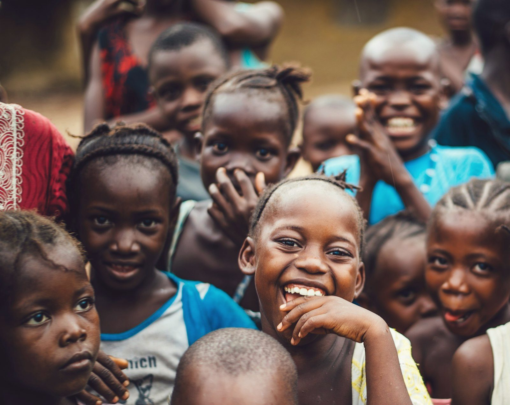

Founder & HostProphetic Intercessor
Our founder is a woman of prayer with a prophetic burden for revival. She leads Prophetic Intercession and hosts our prayer gatherings, including the 24 Hours Prayer Stretch, calling believers across nations to the place of prayer.
Her heart beats for people the world often overlooks. Under her leadership the ministry has reached into prisons, supported rural missions, and begun the work of building an orphanage.
“Prayer is where transformation begins.”
For our founder, intercession is not an event — it is a lifestyle. She believes that when God’s people pray with His heart, He opens doors no one can shut, and sends His people through them.
That conviction shapes the ministry’s rhythm: we seek God first, we listen for His voice, and then we go — carrying hope to prisoners, missionaries in rural places and children in need of a home.

The journey so far
Prophetic Intercession is born
A prayer altar opens online, gathering intercessors from different nations.
Prison outreach
The ministry takes prayer and the Gospel into prison, ministering hope to inmates.
Rural missions supported
Prophetic Intercession stands behind mission work in remote communities.
24 Hours Prayer Stretch · Nov 2026
A full day and night of prayer on Zoom, hosted by our founder — Psalm 85:6.
Orphanage — in progress
We are working toward a loving home for orphaned children.
Hospitals & schools — the future
A vision for healing and education in the communities we serve.
